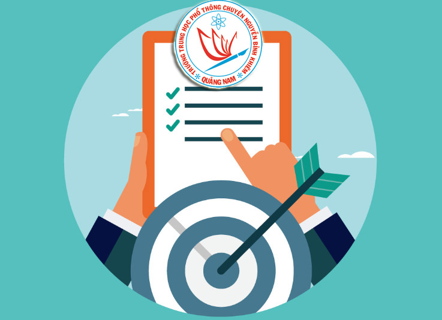

Kế hoạch tổ chức Lễ kỷ niệm 20 năm thành lập trường THPT chuyên Nguyễn Bỉnh Khiêm (2002-2022)

Viết bởi Administrator Chủ nhật, 21 Tháng 8 2022 16:45
Kế hoạch tổ chức Lễ kỷ niệm 20 năm thành lập trường THPT chuyên Nguyễn Bỉnh Khiêm (2002-2022)

(Click vào đây để xem chi tiết và tải về)
Tin mới hơn:
- 21/11/2022 08:51 - ĐỀ THI VÀ HƯỠNG DẪN CHẤM KỲ KIỂM TRA GIỮA HỌC KỲ 1…
- 16/11/2022 15:38 - CHÀO MỪNG KỶ NIỆM 40 NĂM NGÀY NHÀ GIÁO VIỆT NAM (2…
- 27/10/2022 13:07 - MA TRẬN ĐỀ KIỂM TRA GIỮA HỌC KỲ 1 NĂM HỌC 2022-20…
- 26/09/2022 08:45 - THÔNG BÁO KHẨN CỦA GIÁM ĐỐC SỞ GD&ĐT QUẢNG NAM
- 07/09/2022 08:59 - KẾ HOẠCH CHUYÊN MÔN – THỜI KHÓA BIỂU NĂM HỌC 2022-…
Tin cũ hơn:
- 18/07/2022 16:05 - Triệu tập Giáo viên Tham gia khảo sát về trường TH…
- 30/04/2022 16:08 - NỘI DUNG KIỂM TRA CÁC MÔN THI (SỞ RA ĐỀ) KỲ THI KI…
- 29/04/2022 09:18 - BAN ĐẠI DIỆN CMHS TRƯỜNG THPT CHUYÊN NGUYỄN BỈNH K…
- 21/04/2022 19:37 - KẾ HOẠCH ÔN TẬP VÀ KIỂM TRA CUỐI HỌC KỲ 2, NĂM HỌC…
- 21/04/2022 07:03 - DANH SÁCH NHỮNG MẠNH THƯỜNG QUÂN, CÁN BỘ, GIÁO VIÊ…